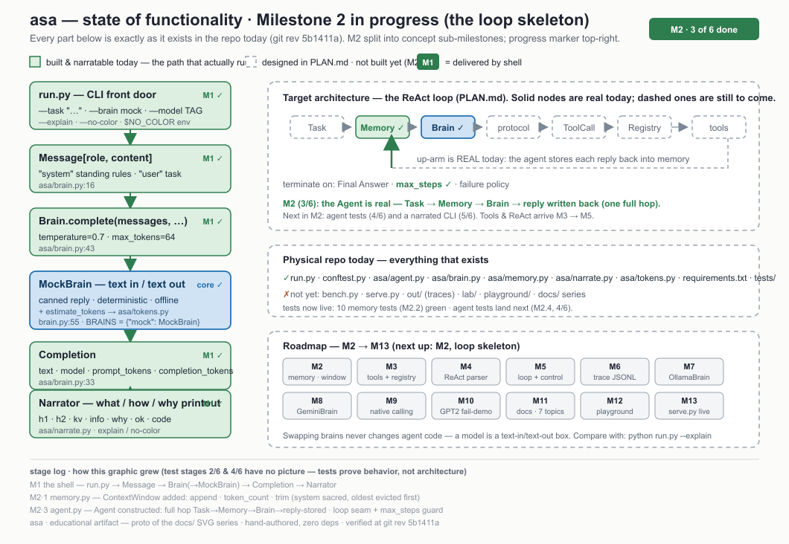
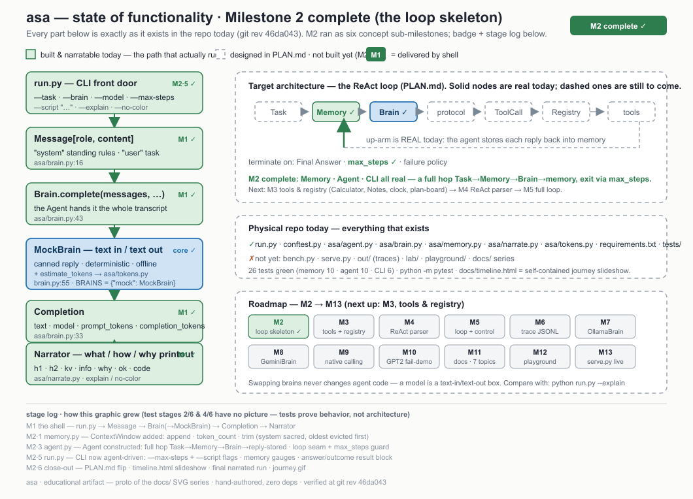
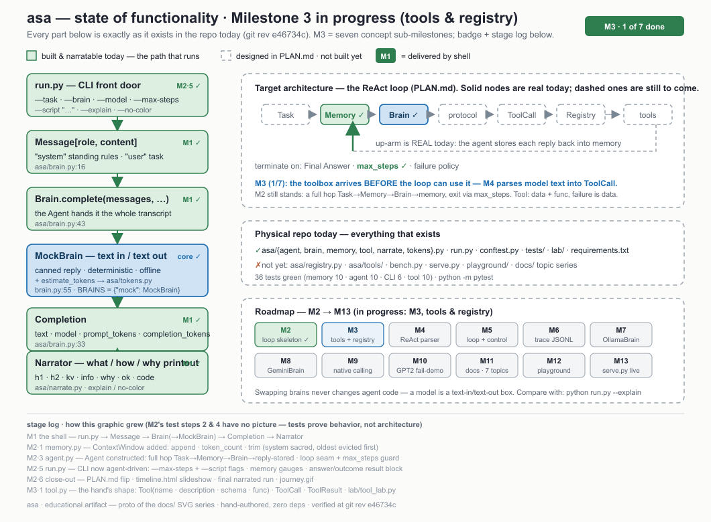
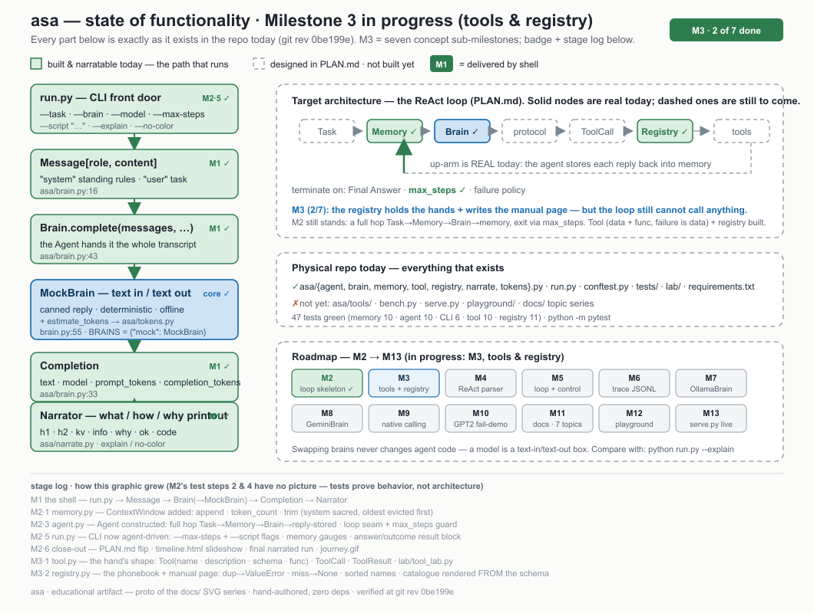
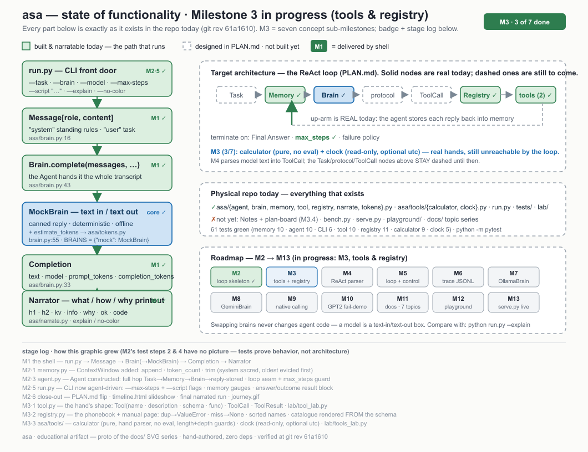
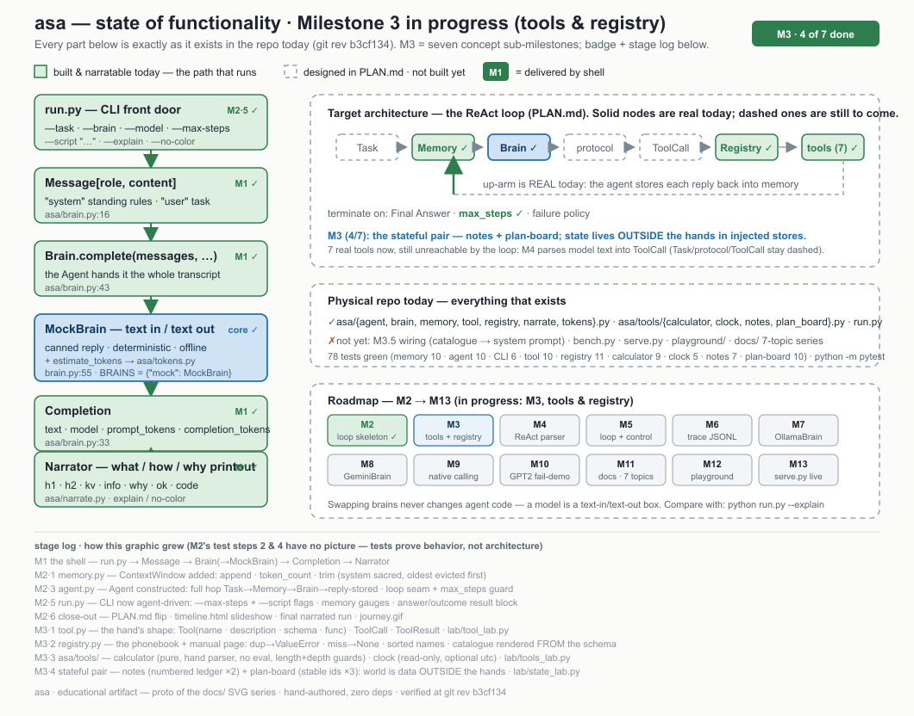
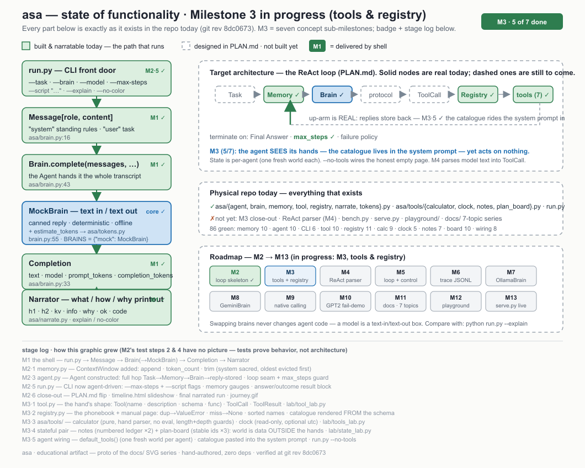
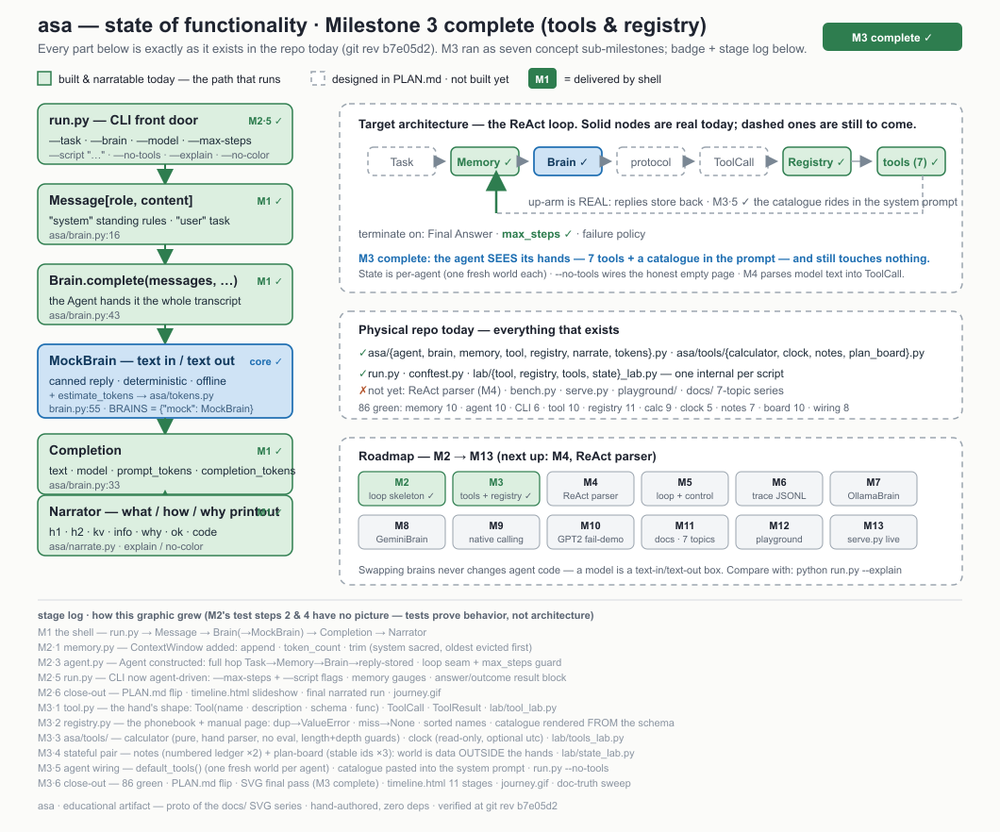

M2·1 — memory: a ContextWindow appears (token-budgeted transcript; system sacred, oldest evicted first)

M2·3 — agent: a full hop Task→Memory→Brain→reply-stored, the loop seam + max_steps guardM2·5 — CLI: run.py becomes the mouthpiece (narrated memory gauges, answer/outcome result block)

M2 close-out — the loop skeleton is complete; next up M3 tools & registry

M3·1 — the hand gets a shape: Tool(data + func) · ToolCall · ToolResult, with failure as data

M3·2 — the phonebook + the manual page: ToolRegistry (dup→ValueError · miss→None · sorted) and a catalogue rendered FROM the schema

M3·3 — the first real hands: calculator (pure, hand parser, no eval, length+depth guards) + clock (read-only, optional utc)

M3·4 — the stateful pair: notes (numbered ledger, ×2 hands) + plan-board (stable ids, ×3 hands); state lives OUTSIDE the hands in injected stores

M3·5 — the wiring: default_tools() builds one fresh world per agent, and the catalogue (the model's manual page) rides the system prompt — the loop still cannot act

M3 close-out — tools & registry complete: 7 hands, a catalogue in the prompt, one fresh world per agent; the parser is M4's job